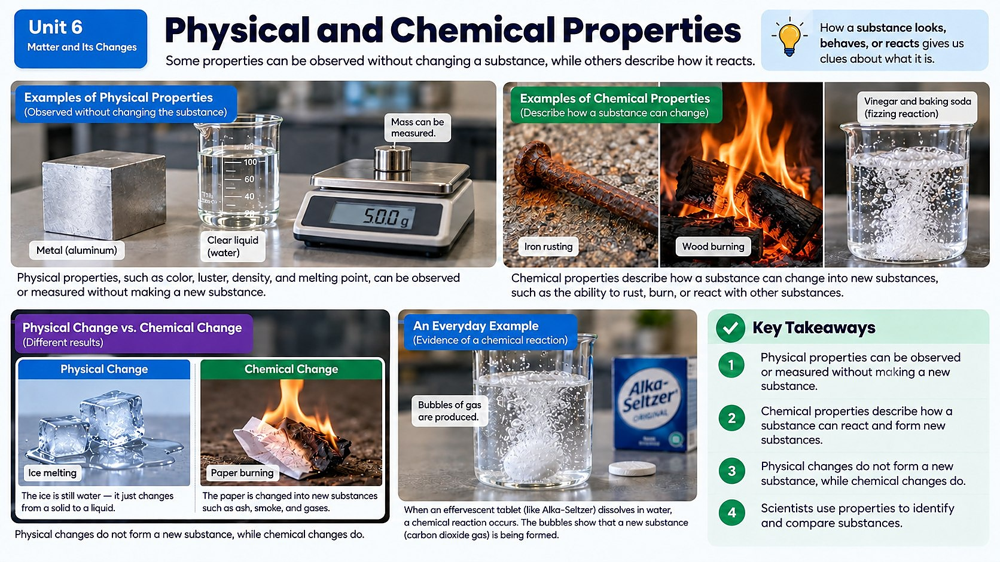

A shiny iron nail left out in the rain slowly turns orange, flaky, and crumbly - did the iron just change shape, or did it actually turn into a completely different substance?

Two Kinds of Clues: Physical vs. Chemical Properties
Every substance carries two different kinds of clues about what it is. Physical properties are things you can observe or measure without turning the substance into something new - its color, its smell, whether it's magnetic, its density, and the exact temperature at which it melts or boils. You can check all of these while the substance stays exactly what it was.
Chemical properties are trickier, because you can only discover them by trying to change the substance chemically. Flammability is a great example - the only way to find out if something is flammable is to see whether it actually catches fire and burns, turning into ash, smoke, and gas in the process. You can't tell just by looking at a piece of paper that it's flammable; you have to test it, and once you do, the paper is gone for good, replaced by new substances.
There's a handy shortcut for telling the two apart: if you can imagine testing a property and having the substance survive completely intact afterward, it's physical. You can weigh a rock, smell a flower, or shine a light through a glass of water, and each substance walks away unchanged. But if the only way to test a property is to destroy or transform the original substance - burning it, letting it react with acid, watching whether it rusts - that property is chemical. This shortcut works because chemical properties are really just descriptions of how a substance behaves during a chemical reaction, and a chemical reaction always leaves something different behind.
Before and After: Did Something New Actually Show Up?
This is where physical and chemical properties become detective tools. If you compare a substance's properties before and after an event and they're identical, nothing chemical happened - it was just a physical change, like ice melting into water (still H2O, just a different state). But if the properties are different afterward - a new color, a new smell, a new density, a substance that now burns when it didn't before - that's strong evidence a chemical reaction occurred and brand-new substances formed.
Think about that rusting nail again. Shiny gray iron metal, when it reacts with oxygen and water in the air, turns into iron oxide - reddish-orange, flaky, and much more brittle. The color changed, the texture changed, even the way it behaves under stress changed. Those are exactly the kinds of property shifts that reveal a chemical reaction has taken place, converting the original iron into something chemically new.
It's worth noticing how gradual this particular change is. Rusting doesn't happen all at once the way a match bursts into flame; it creeps forward as oxygen and water molecules slowly react with iron atoms at the surface, one small patch at a time. That's exactly why iron left outdoors in a humid climate rusts through in just a few years, while the same iron sealed away from moisture in dry desert air can stay shiny for decades. The chemistry is identical either way - only the rate, how quickly the reaction proceeds, is different depending on how much water and oxygen are available to react with the metal's surface.
Counting Atoms: The Hidden Balancing Act
So why do properties change so dramatically in a chemical reaction, when nothing seems to be added or taken away? The answer lies in how atoms rearrange. Picture two hydrogen atoms and one oxygen atom coming together to form a water molecule (H2O). If you built a model of this using atom-shaped pieces, you'd notice something important: every atom that went in is still there in the final molecule - just connected differently. Nothing vanished, and nothing extra appeared.
This holds true even for much bigger, more complicated reactions. Scientists build molecular models specifically to check this: count up every atom of every type on one side of a reaction, then count them again on the other side. If the model is built correctly, those counts will always match perfectly, atom for atom. The atoms haven't disappeared or multiplied - they've simply reorganized into new arrangements, which is exactly why the resulting substance can look, smell, and behave completely differently from what you started with.
Why This Balancing Act Matters
This atom-counting habit isn't just a classroom exercise - it's the foundation for one of the most important ideas in all of chemistry. If the exact same atoms are present before and after a reaction, just connected in new ways, then the total amount of matter in the system can't have changed either. That idea - that mass is conserved because atoms are conserved - is so important that it gets its own name and its own set of rules, which you'll dig into next.
Worked Example: Weighing the Evidence for a Chemical Change
Copper wire gives us a different kind of clue. Take a shiny 5-gram loop of copper wire and hold it in a candle flame for thirty seconds. It doesn't burst into flame or bubble the way baking soda and vinegar do, but pull it out and the shiny orange-pink surface has turned dull and black. Weigh it again, and something surprising shows up: the wire now has a mass of about 5.3 grams, slightly more than when you started.
Where did that extra mass come from? It wasn't created out of nothing - it came from oxygen atoms in the surrounding air. As the copper heated up, oxygen molecules from the atmosphere bonded directly to copper atoms on the wire's surface, forming a new compound called copper oxide, which is exactly why the surface turned black. This is a powerful reminder that a chemical reaction doesn't always look like fizzing or a dramatic color change alone; sometimes the strongest evidence is a small, carefully measured change in mass, which only makes sense once you realize atoms from the air itself joined the reaction.
Real-World Connections
Investigating a House Fire
Fire investigators examine burn patterns, melted materials, and chemical residue at a scene to determine whether a fire started accidentally or was set intentionally, based on how different materials react chemically to heat.
Rusting Bridges and Ships
Iron reacting with oxygen and water forms rust, an entirely new substance with different properties (weaker, flaky, reddish) than the strong metal it used to be — which is why engineers protect steel bridges and ships with paint or special coatings.
Meet the Scientist
Forensic Scientists
Forensic scientists analyze physical and chemical evidence from crime or accident scenes, including comparing burned or damaged materials to their original properties, to help determine what really happened. Their conclusions about chemical changes are often used as evidence in real investigations.
Key Vocabulary
Bold, underlined words in the reading above are clickable too — tap one to see its definition pop out. Or click or tap a card below to reveal the definition.
Explore More
Chapter Review
1. Which of these is a chemical property rather than a physical property?
2. Ice melts into liquid water. Why is this considered a physical change and not a chemical reaction?
3. A shiny nail turns orange, flaky, and brittle after being left outside in the rain. What does this property change most strongly suggest?
4. When scientists build a model of hydrogen and oxygen atoms combining to form water molecules, what should they find when they count atoms on each side?
5. Why does the idea that atoms are conserved in a reaction matter for understanding mass?
California Science Test (CAST) Practice
A student places a shiny silver spoon (mass 45.0 g) into a sealed container with a hard-boiled egg overnight. The next morning, the spoon has dark black patches on its surface. The student records the following measurements taken before and after the overnight test.
| Property | Before (Shiny Spoon) | After (Tarnished Spoon) |
|---|---|---|
| Color | Shiny silver | Black patches on surface |
| Mass of spoon (g) | 45.0 | 45.2 |
| Magnetic? | No | No |
| Density (g/cm³) | 10.49 | 10.49 |
Which combination of evidence from the table best supports the claim that a chemical reaction occurred between the silver spoon and gases released by the egg?